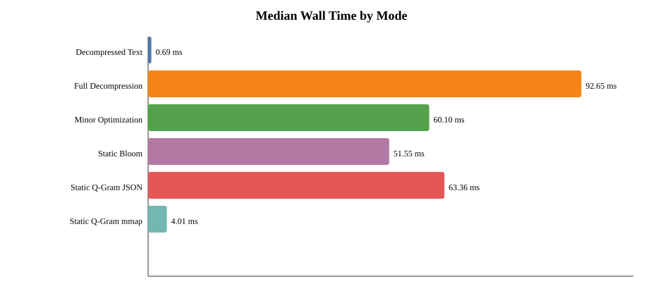
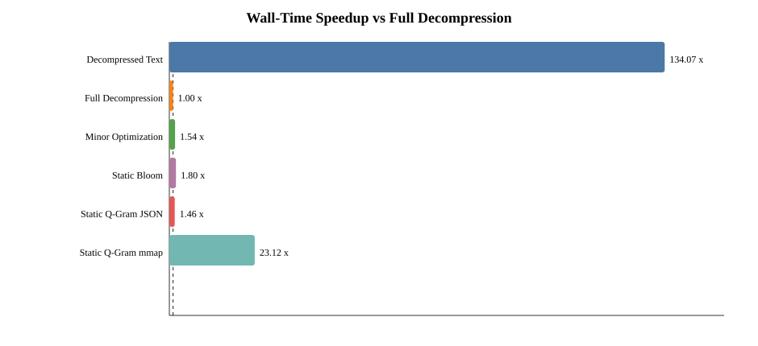
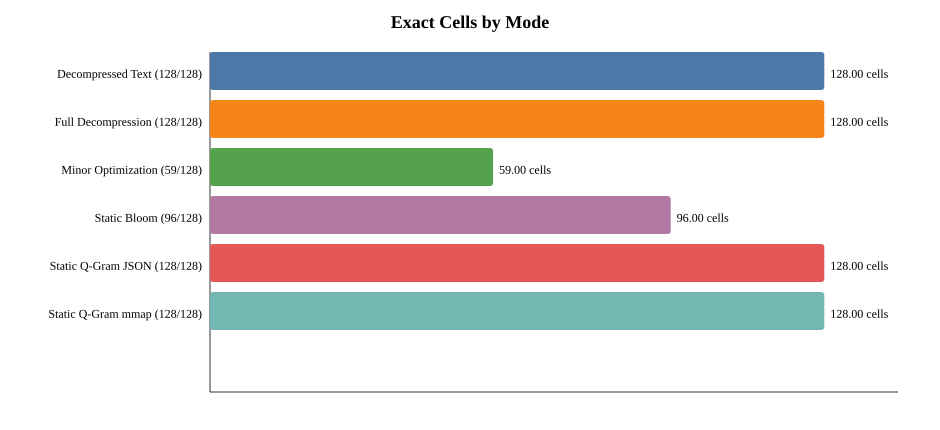
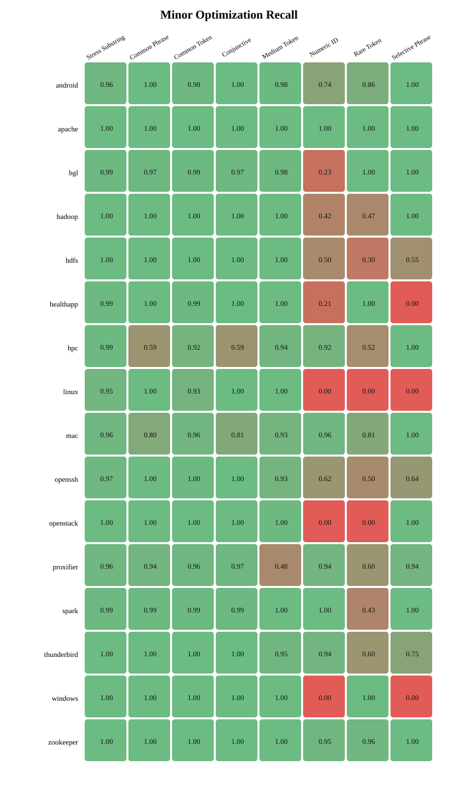
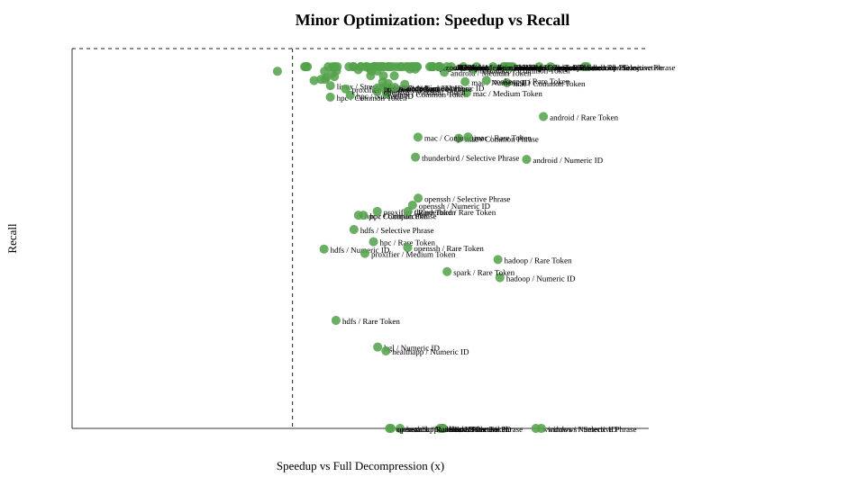
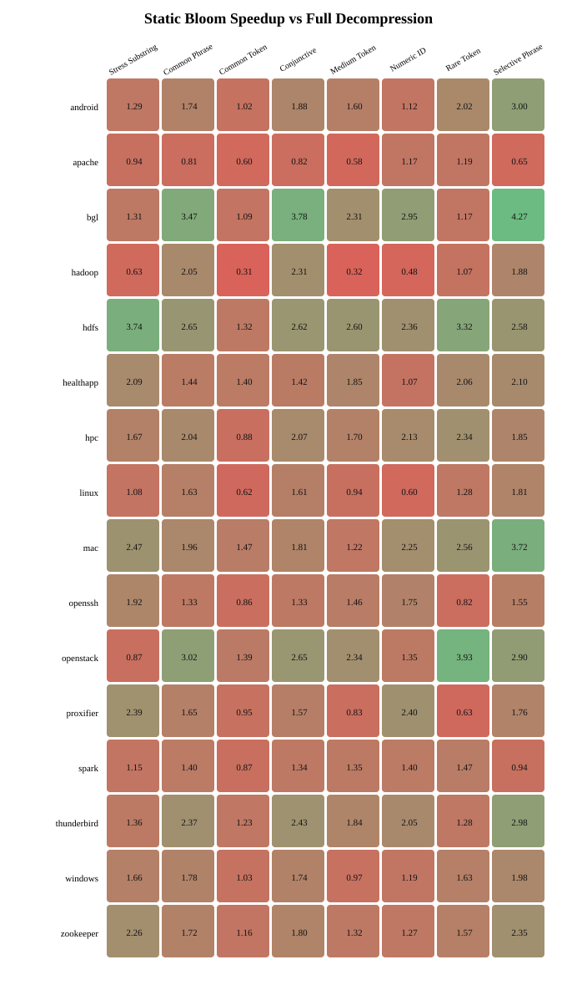

Static Skip Rate

Created at: 2026-05-17T21:25:24.141497
Datasets: linux, apache, hdfs, openstack, android, zookeeper, healthapp, hpc, hadoop, bgl, mac, proxifier, spark, openssh, thunderbird, windows
Queries: common_token, medium_token, rare_token, common_phrase, selective_phrase, numeric_identifier, conjunctive, bloom_stress_substring
Modes: decompressed_text, full_decompression, minor_optimization, static_bloom, static_qgram_index, static_qgram_index_mmap
Raw run records: 25344; cell rows: 768.
| Mode | Cells | Median Wall (ms) | Median CPU (ms) | Median RSS (MB) | Median Recall | Median F1 | All Exact |
|---|---|---|---|---|---|---|---|
| Decompressed Text | 128 | 0.691 | 0.689 | 49.33 | 1.000 | 1.000 | True |
| Full Decompression | 128 | 92.649 | 92.648 | 49.42 | 1.000 | 1.000 | True |
| Minor Optimization | 128 | 60.105 | 60.100 | 49.47 | 0.992 | 0.996 | False |
| Static Bloom | 128 | 51.553 | 51.548 | 49.49 | 1.000 | 1.000 | False |
| Static Q-Gram JSON | 128 | 63.364 | 63.334 | 54.52 | 1.000 | 1.000 | True |
| Static Q-Gram mmap | 128 | 4.007 | 0.734 | 49.27 | 1.000 | 1.000 | True |
| Mode | Exact Cells | Median FN Sum | Median FP Sum |
|---|---|---|---|
| Decompressed Text | 128/128 | 0 | 0 |
| Full Decompression | 128/128 | 0 | 0 |
| Minor Optimization | 59/128 | 1554 | 0 |
| Static Bloom | 96/128 | 11975 | 0 |
| Static Q-Gram JSON | 128/128 | 0 | 0 |
| Static Q-Gram mmap | 128/128 | 0 | 0 |
| Query Group | Exact Cells | False Positives | False Negatives | Median Skip Rate | Median Speedup |
|---|---|---|---|---|---|
| token_safe | 95/112 | 0 | 858 | 82.10% | 1.61x |
| stress | 1/16 | 0 | 11117 | 78.92% | 1.51x |





